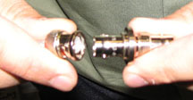
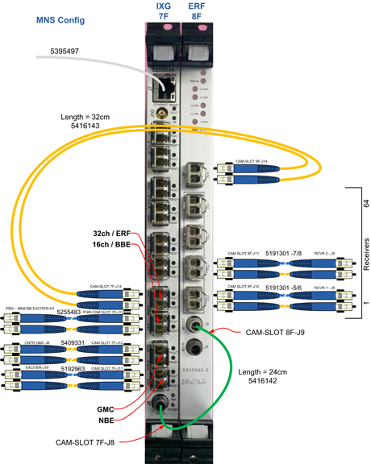
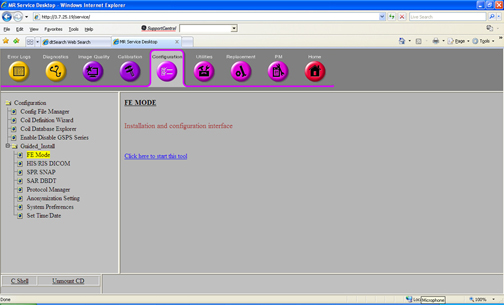
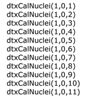
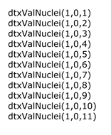

Operating Documentation
Direction 5670006, Rev# 1
Module Version 17.0, Version Date 10/18/11
Operating Documentation |
| ||||
| FATAL ELECTRIC SHOCK HAZARD! | ||||
| LETHAL VOLTAGES ARE PRESENT WITHIN THE power distribution unit (PDU) EVEN IF ALL PDU BREAKERS ARE OFF. | ||||
| Disconnect and Lockout/tagout (LOTO) the power from the system at the facility's Main Disconnect. |
| Condition | Reference | Effectivity |
|---|---|---|
Remove any twists and kinks from the cabling. When routing cables, avoid circular loop bundles. Use “figure eight” coils of less than six feet in diameter. | - | - |
Allow three feet (one meter) of cable slack at the entrance to the cabinets. | - | - |
Before positioning the cabinet, move the MNS cabinet door down using the adjustable hinges. With an opening at the top of the cabinet, the cables can be routed up and out of the MNS cabinet. | - | - |
| ||||
| FATAL ELECTRIC SHOCK HAZARD! | ||||
| LETHAL VOLTAGES ARE PRESENT WITHIN THE PDU EVEN IF ALL PDU BREAKERS ARE OFF. | ||||
| Disconnect and LoTO power from the system at the facility's Main Disconnect. |
| ||||
| Prior to powering down the entire PGR Cabinet, perform a system shutdown of the system software. The Volume Recon Engine (VRE) System that resides in the cabinet can become corrupted if it loses power while software applications are active. | ||||
To prevent fatal electric shock, disconnect the power from the PDU before performing the following procedures.
Notify ALL personnel, who are working on the system, that the system is being shut down.
Shut down the system software before removing power.
For PDU (in PGR Cabinet with plastic safety cover):
Open the front left door of the PGR Cabinet.
Open the plastic cover and flip the operator's workspace host circuit breakers to the OFF position. This allows control upon power up, when this procedure is completed.
Rotate the larger main breaker labeled INPUT counterclockwise to the green OFF (O) position.
Perform LOTO for PGR PDU/Gradient Subsystem, which will disconnect the INPUT circuit breaker.
For the 8 kW MNS installation, install the BB Amp I/F Board (5250032).
At the front of the PGR Cabinet, locate Slot 17U/18U in the UPM Chassis. Remove the covers from the blank slots and insert the BB Amp I/F Board. See Illustration 1.
Locate the preinstalled white Sub-D Cable, P/N 5166354, coiled and secured in the right side of the cabinet. Uncoil and attach to BB AIF Board J3 in Slot 17U/18U.
To install the MNS Breaker Box in the top right corner of the PGR Cabinet, remove the blank plate located in the top right corner of the PGR Cabinet. Remove the six screws from the top side of the cabinet.
Attach the Adapter Plate to the MNS Breaker Box (shown below) with one screw.
Slide the Adapter Plate into position at the top of the PGR Cabinet, secure it with screws (removed in Step a), and attach the MNS Breaker Box to the right handrail in the PGR Cabinet using two screws.
Run the power cable from the MNS Breaker Box along the top edge of the PGR Cabinet as shown below, and secure with cable ties as needed.
Route the cable down the left side of the PGR Cabinet to the Terminal Strip shown below. (To access the terminal strip, the RF Amplifier and the CAM Chassis must be rolled out from the PGR Cabinet.)
Roll the RF Amplifier out from the PGR Cabinet. For details, refer to XRFD and Power Supply Replacement.
Roll the CAM Chassis out from the PGR Cabinet. For details, refer to CAM Chassis Replacement.
| NOTE: | It may be necessary to lean over the CAM Chassis in the next step. Be careful not to put too much pressure on the chassis. |
With a 5/16-inch socket wrench, connect the five wires from the power cable to the terminal strip as described and shown below.
Ensure that the cables are securely fastened, and return the RF Amplifier and the CAM Chassis to their original positions.
At the I/O panel, remove the blank plate from the J204 connection.
Attach Cable 5271096 to J204 on the underside of the I/O Panel. (Panel and cable locations described and shown below.) Run this cable along the side of the PGR Cabinet between the cabinet wall and the Recon components. Attach the other end of the cable to the BB AIF Board at CAM SLOT 17/18FU J5 shown in Illustration 1.
| NOTE: | Before attaching the BNC Cables (J200-203) to the I/O
Panel, connect the Adapter (46-208990P1) to the BNC Connector shown
below. Illustration 7: BNC Connector and Adapter  |
Attach the BNC Cables to J200-203 connections on the underside of the I/O Panel shown in Illustration 1 and the illustration below. Run these cables along the side of the PGR Cabinet between the cabinet wall and the Recon components. Attach the other ends to CAM Slot 19FU J4, CAM Slot 19FU J5, CAM Slot 19L J4, and CAM Slot 19L J5 shown in Illustration 1.
Add the 50-ohm Terminators (2329754 or equivalent) to all empty J numbers on the RF Detector Boards. See Illustration 1.
Tie wrap the MNS Cables that run along the side of PGR Cabinet as shown below. Ensure cables are not in the way of other components that may require service.
Illustration 10: ERF and IXG Boards with Cables for MNS Configuration

Locate Slot 8F on the CAM chassis in the PGR Cabinet. Remove the cover from the blank slot.
Insert the ERF board and seat securely. Attach the ERF board to the CAM Chassis using two screws: one at the top of the board and the second at the bottom of the board.
Remove the clock cable from J11 on the IXG board and connect to J8 on the ERF board. The cable connects the ERF board (J8) to the Exciter (J21).
Daisy-chain the clock signal from the ERF board (J9) to the IXG board (J8) using the provided green cable (Part # 5415142).
Connect the Channel 1 cable pair (Part # 5191310-5/6) to J10 on the ERF board. This cable connects to Receiver 1 (J5).
Connect the Channel 2 cable pair (Part # 5191310-7/8) to J11 on the ERF board. This cable connects to Receiver 2 (J5).
Connect the ERF board (J14) to the IXG board (J14) using the cable pair (Part # 5416143).
Confirm that the cable pair (Part # 5192963-3/4) connecting the IXG board (J11) to the Exciter (J19) is connected.
Connect the ends of Cable 5262319 to J1 and Cable 5265145 to J2 at the rear of the Broadband Exciter module before inserting into the PEN Cabinet.
Refer to the illustration and descriptions below. From the front of the cabinet, insert the module underneath the NB Exciter in the PEN Cabinet. Route these cables to the rear of the cabinet.
Attach Exciter Board to the PEN Cabinet with the two thumbscrews.
In the Scan Room, open the PEN access panel, and attach Cable 5262319 to J31 and Cable 5265145 to J33.
Close PEN access panel.
Detach Cable 5171626 from NB Exciter J18, and reconnect to Broadband Exciter J17_J1 Lower. (This cable is not part of the MNS Cable Kit.)
Locate the cables indicated in the table below, and connect as directed.
| ||||
| The module interconnect cables should not touch the PEN Cabinet door. If the cables touch the door, it can cause a power interruption to the MNS Exciter. | ||||
Dress cables together with tie wraps to ensure the cables are safely contained within the cabinet as shown below.
The MNS Upconverter is installed on the rear pedestal of the magnet.
Illustration 13: Upconverter Location

Install the MNS Upconverter module into the Upconverter bracket.
Attach the mounting bracket with the MNS Upconverter to the rear-ped frame.
Locate and connect the cables indicated in the table and illustration below.
The MNS T/R Module should be removed from the system when spectroscopy is not in use. The presence of the module during a non-MNS scan may cause image quality degradation.
With the LPCA cover off, place the two LPCA rails (P/N 5267384) on the top of the MNS LPCA cover so the notches are facing up. When viewing from the patient end, the right LPCA rail should have the notch farthest away and the left rail closest.
Attach the rails to the cover by fastening the screws from the underside. (Screw heads should be hidden underneath the cover.)
Install the LPCA cover onto the system and secure with four screws.
Move the LPCA to a position for easy access, either to the front or rear of the magnet.
Slide the MNS T/R Switch onto the two rails (not displayed below) on the front of the LPCA as shown.
Attach the cables of the MNS T/R Switch to the MNS A-Port Adapter (see Illustration 15).
Attach the A-Port Adapter to the A Port of the LPCA.
Refer to the illustration and descriptions below. Loosen the two thumbscrews to remove the support bracket from the Secondary PEN Wall (SPW).
Install the MNS TX Switch to the support bracket, and connect all cables as shown in the DVMR MNS Cable Map below. Refer to Item C in Illustration 17 for the location of the MNS TX Switch.
Reattach the support bracket to the SPW.
On the upper TX Switch, remove the connection from J15 of the Magnet I/O, and attach the Y-Cable to J123 on the upper TX Switch and to J127 on the MNS TX Switch (lower) as shown in Illustration 17. Connect the other end of the Y-Cable to the J15 Magnet I/O Connector as shown below.
Notify ALL personnel, who are working on the system, that the system is being powered up.
| ||||
| Whenever the PEN Cabinet LOTO is removed, the Exciter Board requires 20 minutes of power-up time before scanning. | ||||
Open the plastic door over the front of the PDU breakers, and switch ON the appropriate subsystem breakers.
Place any individual circuit breakers that were turned off to the ON position.
From the Common Service Desktop, select [Configuration], Guided Install, and FE Mode as shown below.
Illustration 20: Common Service Desktop Path

Start the Guided Install using operator for the log in.
After the Guided Install window opens, select the [Option Key] tab.
Install the MNS option key using eLicense explained in Software Option Installation with eLicense Generated Keys.
Place the rating plate on the rear of the GOC (if applicable).
Reboot the computer. The installation is now complete.
| NOTE: | The MNS Spectro Option Key delivered with the Hydrogen Only Spectroscopy Option (PROBE/SV) must be previously installed. |
At the Common Service Desktop Manager, select the [Configuration] tab.
Select Guided Install, then FE Mode from the navigation sidebar to launch the Guided Install GUI shown below.
When the Hardware Configuration screen displays, select AMT for the Spectro RF Amp Type.
Ensure all other 3.0T settings are correct for the system.
Modify if necessary, and save all changes. A reboot is required.
At the Common Service Desktop Manager, select the [Utilities] tab.
Select the [Config File Manager] (screen shown below), and ensure the following parameters match the definitions as stated:
Spectroscopy RF Amplifier = yes to configure the Multi-Nuclear Spectro RF Amplifier (amp to ready).
Broadband Transceiver = yes to configure the MNS Broadband Transceiver (frequency change).
Power Monitor Type = 4.
3T Spectro RF AMP Type = 0.
Click [Save Changes] before exiting.
Click [Quit] to exit the Config File Manager.
Reboot the Host to save file changes.
Perform Verification of SaveInfo Data.
To guarantee a linear output from the MNS exciter at a frequency other than 31P and 13C, do a manual calibration using a command in the AGP window. This calibration uses the loopback path only. No RF is sent to the broadband amp. The system only needs to be configured for MNS with the standard MNS hardware (exciter, cabling, etc). It is not necessary to connect an MNS TR module during this calibration.
From the [Utilities] option in the CSD, select [Log into AGP/SCP].
Type the following commands to calibrate the supported MNS nuclei.
The generated file is in the format of dtx2_cal_nuclei_date
stamp_time stamp.log .
Type the following commands to validate the supported MNS nuclei.

Perform TR DD System Path Check. This will ensure the cables are connected properly and not accidentally swapped, primarily with the TX Switch cables.
Perform 8kW 3.0T MNS Amplifier Calibration.
Perform UPM - MNS Functional Check.